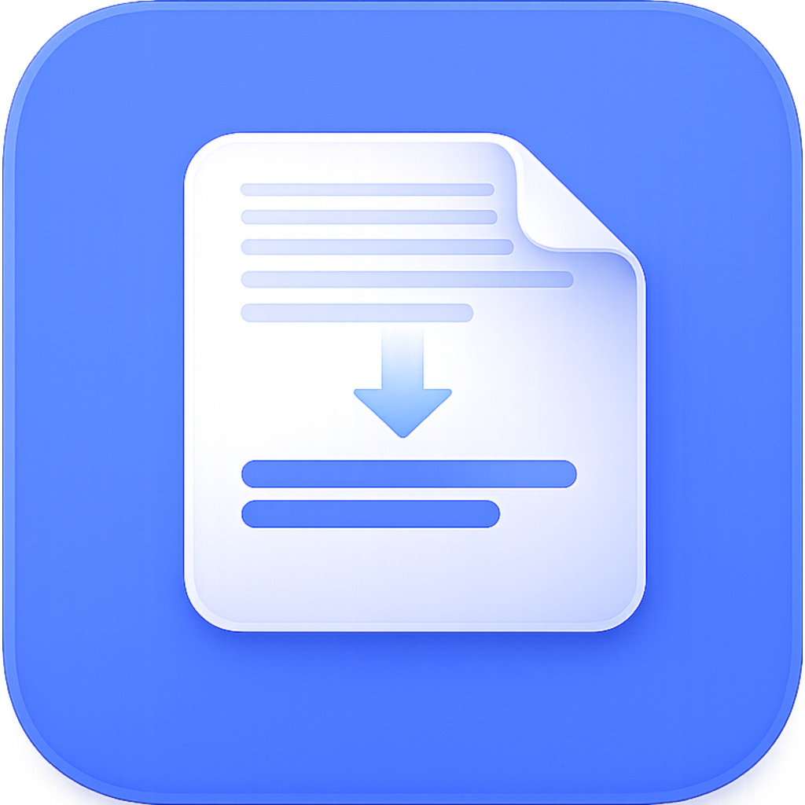

Quelle übernehmen
Text einfügen oder Dateien wie PDF, DOCX, Markdown, HTML, CSV, RTF und TXT importieren.

SMART SummaryAssistent App öffnenLokale KI-Arbeitsoberfläche für Dokumente und Fachtexte
Verwandle lange Dokumente, Berichte, E-Mails und Fachinhalte in klare Zusammenfassungen. Mit steuerbarer Länge, Sprache, Zielgruppe, Fokus, Ton und Ausgabeformat.
Für Texte, die schneller entscheidbar werden sollen
Text einfügen oder Dateien wie PDF, DOCX, Markdown, HTML, CSV, RTF und TXT importieren.
Vorlage, Zielgruppe, Sprache, Fokus, Stil, Handlungsorientierung und Länge bewusst festlegen.
Zusammenfassung kopieren, lokal speichern, als Markdown oder HTML exportieren oder als PDF drucken.
Zielgruppe
Für Executive Summaries, Entscheidungsvorlagen, Projektstatus und schnelle Lagebilder aus langen Quellen.
Für Protokolle, Berichte, Spezifikationen, Risiken, offene Punkte und konkrete nächste Schritte.
Für Kundenunterlagen, E-Mails, Fachinformationen und wiederkehrende Zusammenfassungsaufgaben.
Für Menschen, die Recherche, Dokumentenarbeit und Informationsauswertung ruhiger strukturieren möchten.
Workflow
Lizenz aktivieren, eigenen API-Key hinterlegen und Verbindung über den lokalen Proxy prüfen.
Text direkt einfügen, Datei per Drag and Drop übernehmen oder ein Beispiel laden.
Profil nutzen oder Vorlage, Zielgruppe, Fokus, Ton, Länge und Ausgabeformat einzeln festlegen.
Kopieren, exportieren, drucken oder über den lokalen Verlauf später wieder öffnen.
Die App im Einsatz
Die App ist auf produktive Arbeit ausgelegt: Quelle, Einstellungen, Ergebnis, Verlauf, Lizenz und API-Status bleiben in einer klaren Oberfläche erreichbar. Kein Umweg über Marketing, sondern ein Werkzeug für echte Textarbeit.
Direkt zur ArbeitsoberflächeFunktionen
Fließtext, Stichpunkte, Tabelle, Executive Summary oder Entscheidungsnotiz je nach Ziel.
Standard-Zusammenfassung, Meeting-Protokoll, Management Briefing, Risikoanalyse, Projektstatus und mehr.
Häufig genutzte Parameterkombinationen lokal sichern und wieder anwenden.
Zeichen, Token-Schätzung, Absätze, erkannte Sprache und Struktur helfen bei der Einschätzung der Quelle.
Die letzten Zusammenfassungen bleiben lokal im Browser auffindbar und können erneut geladen werden.
Ergebnisse als TXT, Markdown oder HTML sichern und per Browser als PDF drucken.
Datenschutz & Kontrolle
SMART SummaryAssistent verwaltet Profile, Verlauf, Lizenz und API-Key lokal im Browser-Prototyp. KI-Anfragen laufen über den lokalen Proxy und deinen eigenen Anthropic API-Key. Der Verbindungs- und Lizenzstatus bleibt sichtbar.
FAQ
TXT, MD, PDF mit kopierbarem Text, DOCX, RTF, HTML und CSV. Gescannte PDFs benötigen vorher OCR.
Nein. Die App erstellt strukturierte Zusammenfassungen. Inhalte, Zahlen, rechtliche Aussagen und Entscheidungen sollten geprüft werden.
Sie werden lokal im Browser gespeichert und verlassen den Browser nicht ohne aktive KI-Anfrage oder Export.
Die App arbeitet mit einem eigenen Anthropic API-Key über einen lokalen Proxy.
Empfohlen sind bis ca. 100.000 Zeichen. Maximal verarbeitet die App 180.000 Zeichen.
Lizenzmodell
Für Anwender, die Dokumente, Berichte und Fachtexte regelmäßig mit KI verdichten und dabei Profile, Verlauf und lokale Arbeitsdaten sauber nutzen möchten.
Einmal aktivieren, lokal arbeiten und wiederkehrende Zusammenfassungsabläufe strukturiert ausbauen.
zzgl. 19% MwSt. · 201,11 € inkl. MwSt. · entspricht 14,08 € netto pro Monat